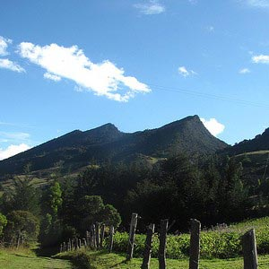
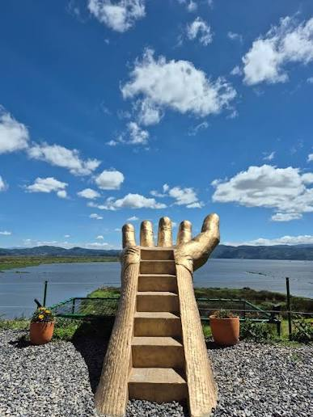
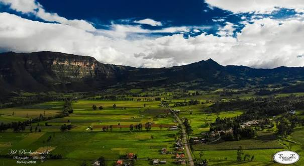

Cerro de la cruz
Mirador natural e hito geográfico de Simijaca que ofrece una vista panorámica del casco urbano y el valle lechero.
Descubre las mejores perspectivas del valle y la cuenca de Fúquene desde los puntos altos del municipio.

Mirador natural e hito geográfico de Simijaca que ofrece una vista panorámica del casco urbano y el valle lechero.

Punto elevado en la zona rural desde donde se divisa la extensión del cuerpo de agua de la Laguna de Fúquene.

Formación rocosa propia del municipio, ideal para fotografía de paisajes y observación de flora nativa andina.